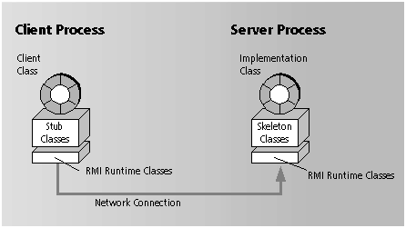

RMI Basics
RMI technology allows a Java object in one process to invoke the methods
of another Java object running in another process. The basic parts of programs
that use this technology are shown in the illustration that follows.

The role that each part plays in an RMI program is summarized below:
-
Client Class -- Invokes a business method, which will be executed in the
server process. Notice that a complete client-side application may consist
of more classes than the RMI client class.
-
Stub Classes -- Used on the client side; they convert the client class's
method invocation into a format that can be delivered over a network connection.
They perform the same function for values that are returned from the server
side, converting them back into the client's language format.
-
RMI Runtime Classes -- Manage the transmission and delivery of method invocations
between processes.
-
Implementation Class -- Contains the server's business logic, which clients
execute by remote method invocation. The RMI module generates implementation
classes that create instances of themselves and export those instances
to the RMI runtime. The implementation class also takes a reference to
the exported instance and makes it publicly available by registering it
with an RMI registry.
-
Skeleton Classes -- Used on the server side; convert a method invocation
from the wire format generated by the stub classes and transmitted by the
RMI runtime into a format that can be read by the server-side instance.
Note: RMI is a complex technology and a comprehensive account of it is
outside the scope of this document. If you are developing RMI programs
and you are not familiar with the technology, you will do well to look
at any of the books that have been written on RMI.
Legal Notices